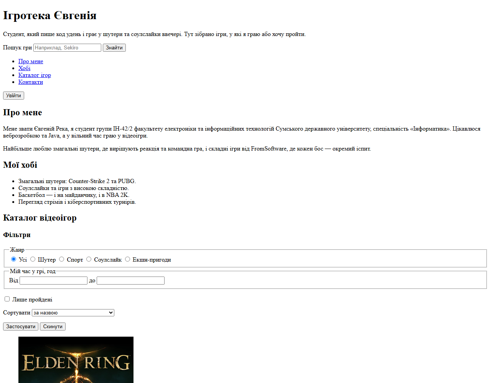
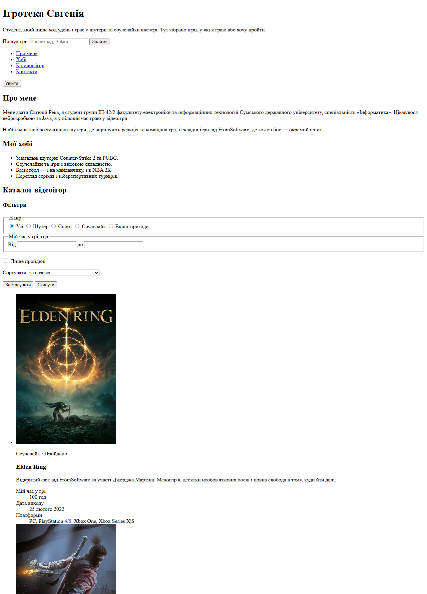
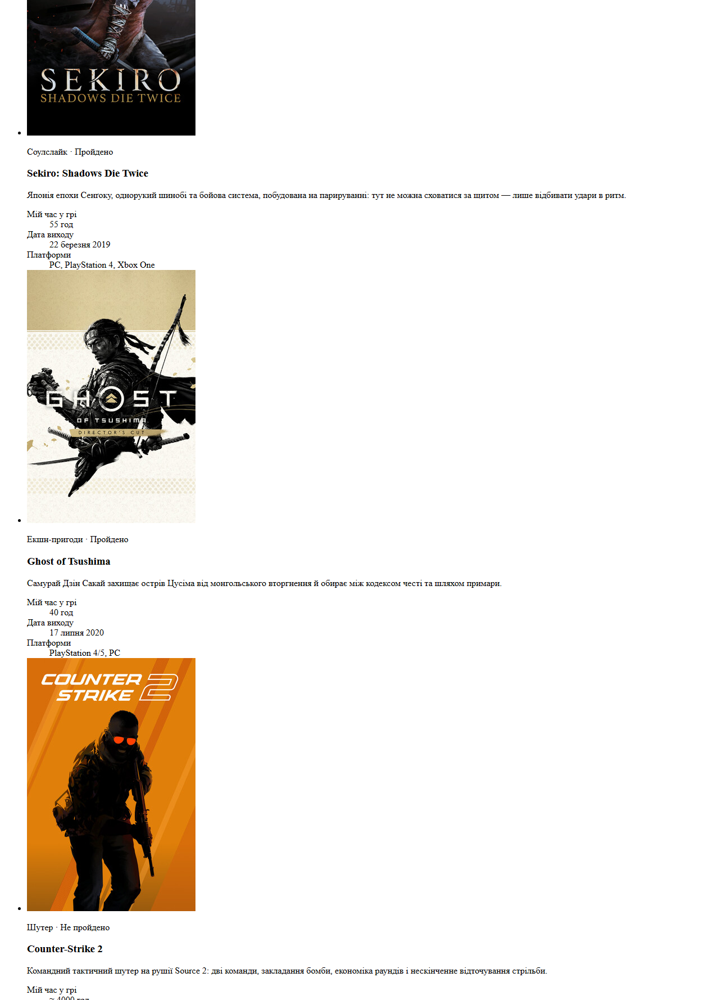
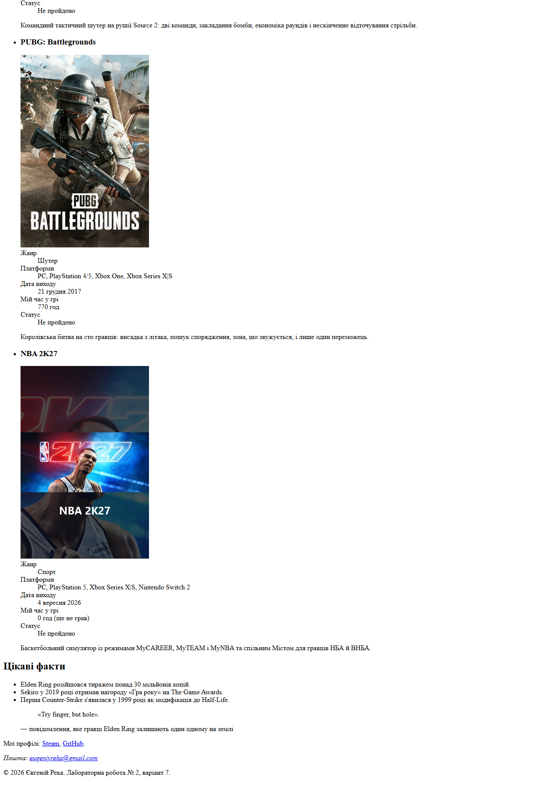
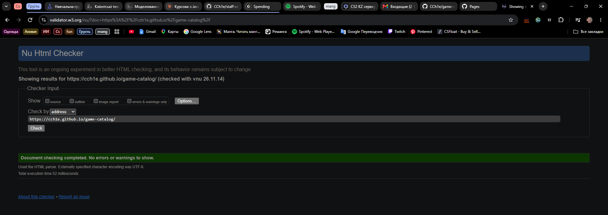

МІНІСТЕРСТВО ОСВІТИ І НАУКИ УКРАЇНИ
СУМСЬКИЙ ДЕРЖАВНИЙ УНІВЕРСИТЕТ
Факультет електроніки та інформаційних технологій
Кафедра комп'ютерних наук
ЗВІТ
з лабораторної роботи № 2
з дисципліни «Клієнтські технології Web-програмування»
на тему «Семантична структура та інструменти перевірки валідності HTML-документу»
Варіант 7 «Відеоігри»
Виконав:
студент групи ІН-42/2
Река Є. Д.
Перевірила:
Шутилєва О. В.
Суми — 2026
Мета роботи: навчитися будувати коректну семантичну структуру вебсторінки, яка правильно описує зміст документа для браузера, пошукових систем і допоміжних технологій, та довести розмітку до стану, у якому вона проходить перевірку валідатором W3C без помилок.
Предметна область проєкту: особистий каталог відеоігор (варіант 7). Сторінка показує ігри, у які я граю або які вже пройшов. Кожна картка описує одну гру: обкладинку, жанр, платформи, дату виходу, кількість наіграних годин, статус проходження та короткий опис.
Обґрунтування вибору. Відеоігри — тема, яку я добре знаю, тому дані для карток реальні, а не вигадані: у каталозі ігри, у які я справді граю, і мій справжній час у них. Крім того, модель картки природно лягає на вимоги курсу: жанр — це категорія з обмеженого переліку для майбутньої фільтрації, наіграні години — числове поле для сортування та статистики, «пройдено» — булева ознака, а вся колекція карток відповідатиме ресурсу /games у REST API в наступних роботах.
Посилання на роботу:
Семантичний елемент повідомляє не те, як вміст має виглядати, а те, чим він є. Наприклад, <nav> каже браузеру, що всередині навігація, <main> — що це головний вміст сторінки, а <footer> — що це підвал. Елемент <div> такої інформації не несе: це просто контейнер. Різницю не видно оком, але її «бачать» програми екранного доступу, пошукові роботи та сам браузер. Наприклад, незряча людина може одразу перейти до основного вмісту або до навігації, бо ці ділянки позначені як орієнтири (landmarks). Тому елемент обирають за змістом, а вигляд йому надають пізніше засобами CSS.
Заголовки <h1>–<h6> утворюють план документа, схожий на зміст книжки. На сторінці має бути один <h1> — її головна назва. Розділи першого рівня отримують <h2>, їхні підрозділи — <h3>, і так далі. Рівні не можна пропускати (наприклад, ставити <h4> одразу після <h2>), бо тоді план «ламається»: користувач програми екранного доступу, який переходить між заголовками, вирішить, що пропустив якийсь розділ. Рівень заголовка обирають за місцем у структурі, а не за розміром шрифту.
<article> — це самодостатній фрагмент, який зберігає сенс, навіть якщо його вийняти зі сторінки й показати окремо: запис блогу, коментар, картка товару. <section> — це тематична частина документа зі своїм заголовком, яка має сенс лише в контексті сторінки. У моєму каталозі кожна картка гри — це <article>: її можна показати окремо, і вона все одно буде зрозумілою. А блоки «Каталог відеоігор» і «Фільтри» — це <section>: окремо від сторінки вони не мають сенсу.
Атрибут alt — це текстова заміна зображення. Його зачитує програма екранного доступу, і його показує браузер, якщо картинка не завантажилася. Він має передавати те, що несе зображення, а не просто слово «картинка». Якщо зображення суто декоративне, alt залишають порожнім (alt=""), щоб програма екранного доступу його пропустила.
Атрибут srcset перелічує кілька версій одного зображення з різною шириною (у мене — 600 і 1200 пікселів), а sizes підказує браузеру, якої ширини картинка буде на екрані. На основі цього браузер сам обирає найменший файл, якого вистачить для чіткого відображення. Наприклад, на звичайному екрані він завантажить меншу версію, а на екрані з високою щільністю пікселів — більшу. Це працює без жодного CSS, бо вибір файлу відбувається ще на рівні HTML. Також я використав loading="lazy", щоб картинки нижче першого екрана вантажилися лише під час прокручування, і fetchpriority="high" для першої обкладинки, щоб вона з'являлася якомога швидше.
Ці елементи поєднують текст для людини зі значенням для машини. У <time datetime="2022-02-25">25 лютого 2022</time> людина бачить звичну дату, а програма отримує її у стандартному форматі, який легко порівнювати й сортувати. Так само <data value="100">100 год</data> містить чисте число, без слова «год». Завдяки цьому в наступних роботах JavaScript зможе сортувати й фільтрувати картки за точними значеннями, а не розбирати текст.
Документ починається з декларації <!DOCTYPE html> та кореневого елемента <html lang="uk">: мова вказана, щоб програми екранного доступу правильно вимовляли текст. У <head> задано кодування UTF-8, налаштування viewport для мобільних пристроїв, опис сторінки для пошукових систем, автора, змістовний <title> і закоментоване місце для підключення стилів у наступній роботі.
Вміст <body> побудовано з таких секційних елементів:
<header> — шапка з назвою сторінки, коротким описом власника, формою пошуку гри з роллю search, головною навігацією <nav> і кнопкою «Увійти», яка в наступних роботах відкриватиме модальне вікно входу;<main> — головний вміст, один на сторінку. Усередині: <article> «Про мене» (самодостатня розповідь про автора), <section> «Мої хобі» та <section> «Каталог відеоігор»;<section> «Фільтри» з формою фільтрації та сортування і список <ul>, у якому кожен пункт містить картку-<article>. Числові та довідкові поля картки оформлено списком визначень <dl>, бо це пари «назва поля — значення»;<aside> — другорядна інформація: цікаві факти, цитата у <figure> з <blockquote> і підписом, посилання на профілі;<footer> — підвал з контактною поштою в <address> і роком створення;<dialog> — заготовка модального вікна входу для наступних робіт.Елементи <div> і <span> не використано жодного разу: для кожної частини сторінки знайшовся відповідний семантичний елемент. Усі основні блоки мають атрибути id і class, щоб у наступних роботах до них можна було звертатися зі стилів і JavaScript.
Заголовки йдуть послідовно, без пропусків рівнів:
| h1 | Ігротека Євгенія |
| h2 | Про мене |
| h2 | Мої хобі |
| h2 | Каталог відеоігор |
| h3 | Фільтри |
| h3 | Elden Ring, Sekiro, Ghost of Tsushima, Counter-Strike 2, PUBG, NBA 2K27 (по одному на картку) |
| h2 | Цікаві факти |
| h2 | Вхід (у модальному вікні) |
Назви карток мають рівень <h3>, бо картки вкладені в розділ «Каталог відеоігор» з <h2>. Фільтри теж мають <h3>, бо це підрозділ того самого каталогу.
У каталозі шість карток. Порядок елементів у картці повторює анатомію з демонстраційного прикладу викладача: спершу обкладинка, далі рядок із категорією та статусом, назва, опис і наприкінці числові дані. Кожна картка має повний набір полів моделі: обкладинку з alt, title, srcset і sizes; жанр як категорію з обмеженого переліку (шутер, спорт, соулслайк, екшн-пригоди) і статус «пройдено» — обидва в <data> з машиночитаним значенням; назву (<h3>); текстовий опис; мій час у грі в годинах у <data>, дату виходу в <time> і платформи.
Пошук винесено в шапку окремою формою з роллю search, як у прикладі викладача. У формі фільтрів жанр обирається групою перемикачів (radio), яка після стилізації стане рядом кнопок-категорій. Кожне поле пов'язане зі своїм підписом через пару <label for> та id, а групи «Жанр» і «Мій час у грі» оформлено через <fieldset> з підписом <legend>. Значення перемикачів жанрів збігаються зі значеннями <data> у картках, тож у наступних роботах фільтрацію можна буде реалізувати простим порівнянням.
Сторінку перевірено в браузері без жодного правила CSS. Вона читається зверху вниз логічно: заголовок і навігація, розповідь про автора, хобі, фільтри, картки, факти й підвал. Структуру зрозуміло без оформлення.

Рисунок 3.1 — Перший екран сторінки без стилів

Рисунок 3.2 — Сторінка без стилів повністю, частина 1

Рисунок 3.3 — Сторінка без стилів повністю, частина 2

Рисунок 3.4 — Сторінка без стилів повністю, частина 3
Опубліковану сторінку перевірено у валідаторі W3C Nu HTML Checker за адресою https://cch1e.github.io/game-catalog/. Результат: «Document checking completed. No errors or warnings to show», тобто немає ні помилок, ні попереджень. Додатково структуру DOM, ролі елементів та їхні доступні імена перевірено в інструментах розробника браузера.

Рисунок 3.5 — Результат перевірки у W3C Nu HTML Checker
Немає вертикальної обкладинки NBA 2K27. Причина: гра вийшла нещодавно, і в Steam для неї ще немає обкладинки у форматі 600×900, як для інших ігор. Без неї картка вибивалася б із загального вигляду, а srcset не мав би двох версій. Усунення: я зібрав вертикальну обкладинку з офіційного горизонтального банера гри у двох розмірах, 600×900 і 1200×1800 пікселів, як для решти карток.
Поле «час проходження» не підходить для частини ігор. Причина: у Counter-Strike 2, PUBG і NBA 2K27 немає сюжетної кампанії, яку можна «пройти», тому числове поле для них не мало сенсу. Усунення: я замінив поле для всіх карток на «Мій час у грі, год». Воно має сенс для будь-якої гри і так само підходить для сортування та статистики.
Як задати розмір зображення без CSS. Причина: без стилів браузер показує картинку в її природному розмірі, тож обкладинка шириною 1200 пікселів займала б увесь екран. Усунення: я вказав атрибути width="300" і height="450" та відповідне значення sizes. Тепер картинка має сталий розмір без CSS, браузер заздалегідь резервує під неї місце (сторінка не «стрибає» під час завантаження), а з srcset обирає потрібний файл.
У ході роботи я створив сторінку-каталог відеоігор на HTML5 без стилів і довів її до стану, коли валідатор W3C не знаходить жодної помилки чи попередження. Я навчився обирати елементи за змістом, а не за виглядом: розрізняти <article> і <section>, будувати послідовну ієрархію заголовків, оформлювати колекцію карток списком і позначати дати та числа машиночитаними елементами <time> і <data>. Також я навчився підключати адаптивні зображення з srcset і sizes та правильно пов'язувати підписи з полями форми.
Ця структура стане основою для наступних робіт курсу. Атрибути id і class знадобляться для стилізації, форма фільтрів і значення в <data> — для фільтрації та сортування на JavaScript, кнопка «Увійти» та <dialog> — для модального вікна входу, а модель картки — для отримання даних з REST API.
Чим семантичний елемент відрізняється від <div> і чому вибір елемента впливає на доступність? Семантичний елемент має значення та роль: <nav> — навігація, <button> — елемент керування. <div> — порожній контейнер без значення. Програми екранного доступу показують користувачу ролі елементів і дозволяють переходити між орієнтирами, а <button> до того ж сам отримує фокус з клавіатури й реагує на Enter і пробіл. <div>, оформлений як кнопка, нічого з цього не вміє.
За якими правилами будується ієрархія заголовків і чому не можна пропускати рівні? Один <h1> для назви сторінки, далі кожен вкладений розділ на рівень нижче за свого «батька». Пропуск рівня порушує план документа: користувач, який навігує заголовками, вирішить, що якийсь розділ загубився.
Скільки елементів <h1> і <main> доречно мати на сторінці? По одному. <h1> — головна назва сторінки, а видимий <main> за специфікацією може бути лише один, бо головний вміст в документа один.
У чому різниця між <article> і <section> і як її застосувати до каталогу карток? <article> самодостатній і має сенс окремо від сторінки, <section> — тематична частина документа. У каталозі кожна картка — <article>, а весь каталог і блок фільтрів — <section>.
Навіщо загортати перелік карток у список <ul>? Список повідомляє, що картки — однорідна колекція. Програма екранного доступу оголосить «список, 6 елементів», і користувач одразу знатиме, скільки там карток. Крім того, така розмітка прямо відповідає масиву об'єктів, який прийде з REST API.
Що описує атрибут alt і коли його лишають порожнім? alt передає зміст або функцію зображення текстом для тих, хто картинку не бачить. Порожнім (alt="") його лишають для декоративних зображень, щоб програма екранного доступу їх пропускала. Сам атрибут при цьому не прибирають.
Для чого призначені атрибути srcset і sizes і чи працюють вони без CSS? srcset перелічує версії зображення різної ширини, sizes вказує, якої ширини зображення буде на екрані. Браузер сам обирає найменший достатній файл під розмір екрана та щільність пікселів. Без CSS вони працюють, бо це механізм HTML.
Яку перевагу дають елементи <time> і <data> порівняно зі звичайним текстом? Вони містять машиночитане значення поруч із текстом для людини. Дату чи число можна точно порівнювати, сортувати й фільтрувати скриптом, а пошукові системи правильно розуміють дати, незалежно від того, як текст записано для людини.
Як правильно пов'язати підпис із полем форми і чому це важливо? Через <label for="id-поля"> з таким самим id у поля, або вкладенням поля всередину <label>. Тоді програма екранного доступу зачитує назву поля, а клік по підпису переводить фокус на поле, що особливо зручно для маленьких прапорців.
Що перевіряє валідатор W3C і чому невалідна розмітка небезпечна? Валідатор перевіряє відповідність документа специфікації HTML: правильність вкладення елементів, допустимі атрибути, обов'язкові атрибути, унікальність id, застарілі елементи тощо. Невалідну розмітку різні браузери «виправляють» по-різному, тому DOM може відрізнятися від задуманого. Через це ламаються стилі та скрипти, погіршуються доступність та індексація.
{{CODE}}